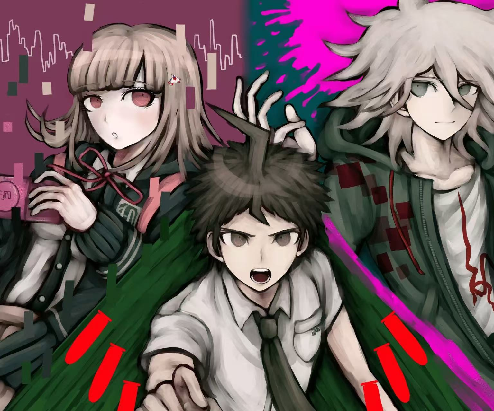
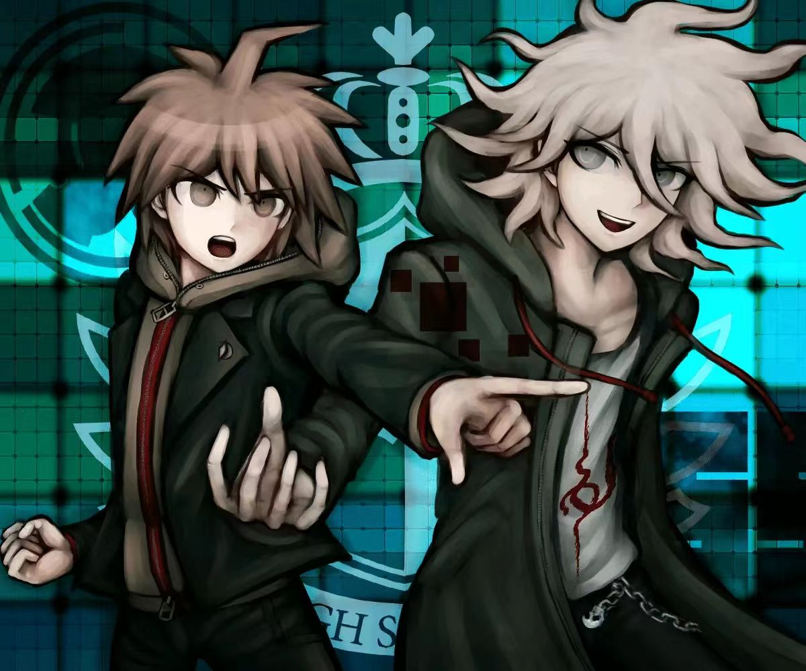
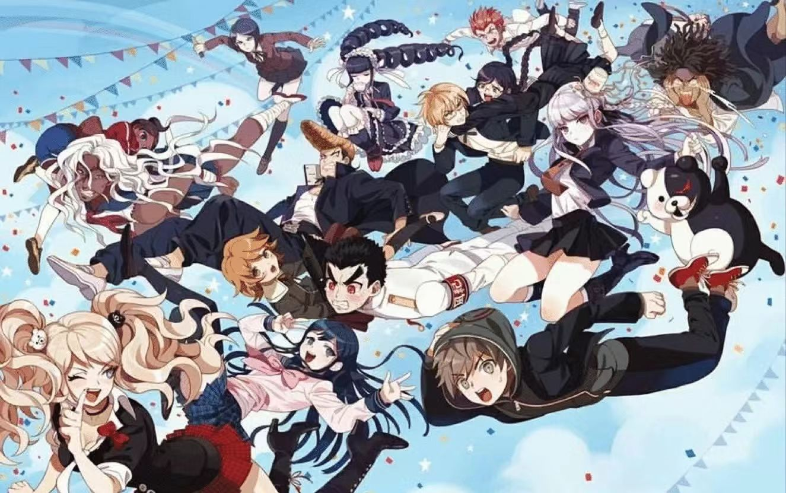
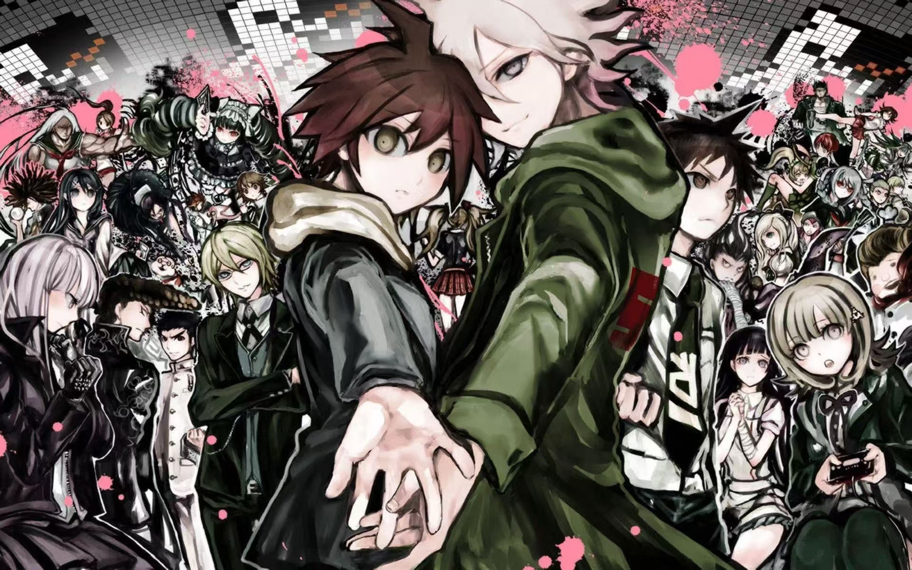
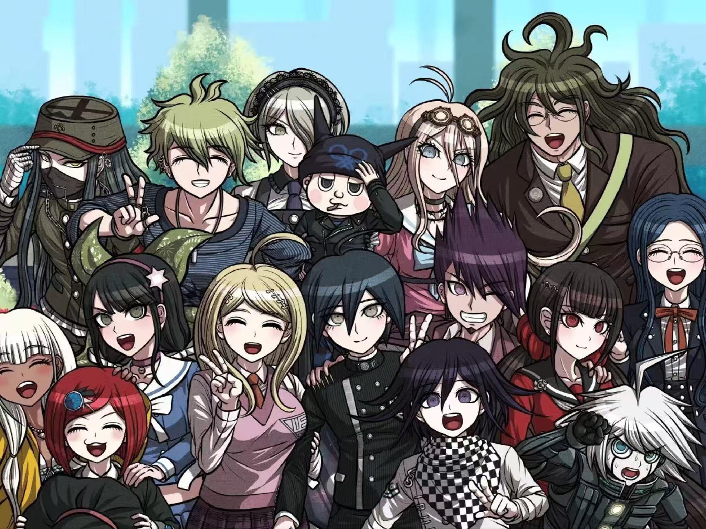

不断的寻找希望，这才是真正的希望。
最终能幸存下来的人，既不是强者也不是智者，而是能适应变化的人。
以自己为标准判断价值，你意识不到那是何等危险的行为吗?
规矩，既是束缚，也是保护。
爱情，友情，亲情，感情越是强烈，当其崩溃时，接踵而至的绝望感也越是强烈。
我对自己的谎言很有自信。既然我能够骗得了别人，那么我也可以骗自己。

希望是不会输给绝望的。
强者是险无可避，甘愿赴往荆棘路。
我自认我擅长欺骗，不仅骗得过别人，连自己的心也能被蒙骗。
作为世界的希望而重生的你
就赐予你学院创始人神座出流之名吧。
我不是什么精英，外面也充满绝望，也没有那么伟大可以代表希望，但是，但是我不会放弃，不会厌恶，不会抛弃，不会绝望，因为乐观是我唯一的优点!


堵上性命的审判，堵上性命的互相欺骗，堵上性命的背叛，堵上性命的解谜，堵上性命的辩护，堵上性命的信任，堵上性命的...学级裁判!
万事万物，有开始，就一定有终结
而且，有终结，就一定有新的开始。
黑夜一定会结束...被黑色的黎明取代!雨一定会停的...
大灾完了是大旱!
是的，有终结，就一定有新的开始
所以，还会见面的。
